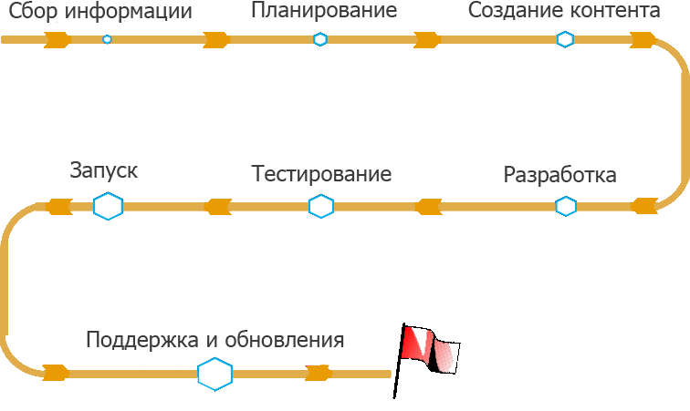

Процесс разработки сайта
Стоит понимать, что создание сайта – довольно крупный проект. Даже если ресурс небольших размеров он может сыграть существенную роль в развитии бизнеса, а потому даже для одностраничника требуется большой объем работ и тщательная проработка всех деталей.
Сбор информации
Естественно, любой проект начинается со встречи с клиентом. На первой встрече вам нужно определить основные направления работы – какой продукт необходимо сделать, какими функциями он будет обладать, какие потребуются материалы (тексты, изображения, и т.д).
Создание контента
После сбора информации и планирования, вам совместно с клиентом нужно приступать к планированию контента – в особенности текста. Подготовка информации является самой крупной работой, которую выполняет в проекте клиент, и она может занять действительно много времени.
Вёрстка и разработка
После того, как вы обсудили контент который будет располагаться на сайте, вы должны приступить к вёрстке и разработки. Этот пункт занимает большее количество времени при создании сайта.
Тестирование и обзор
Как только вы сверстали сайт, вы должны начать его тестировать. Если выявляются ошибки, то вам необходимо их исправлять, желательно в кратчайшие сроки
Запуск
Запуск сайта является важной частью в этой разработке. Так как при его запуске, выявляются новые ошибки и недочёты, которые нужно решать.
Поддержка
Поддержка сайтов — это значимый фактор в развитии и повышении эффективности его работы. Это комплексное понятие, включающее в себя множество услуг. Например, обновление разделов сайта, размещение актуальных новостей, публикация статей, фотографий, работа с почтовым ящиком или помощь по улучшению функциональности сайта.
Регулярное обновление
Регулярное наполнение сайта актуальными и интересными статьями, адекватная смена дизайна, изменение программного обеспечения. Сайт должен находиться в постоянном развитии, двигаться в ногу со временем и содержать только самую свежую информацию.